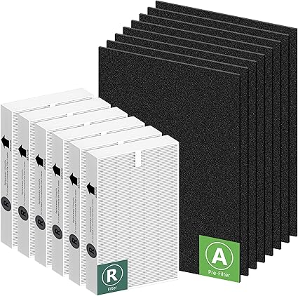
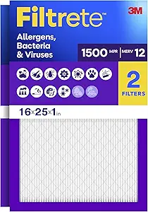
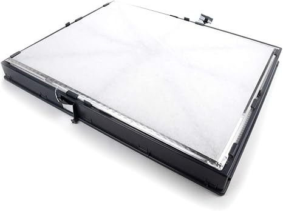

← hvacprefilters.com
The Truth About Hvacprefilters in 2026
May 2026
Finding good hvacprefilters shouldn't require hours of research. Yet in 2026, the sheer number of options makes it harder than it should be.
Worth Your Money

→ #5 — CFS Pack of 4 Premium Additional Odor Control Carbon Pre-Filter for Air Cle — Editor's pick

→ #1 — Mounto 10-Pack Pre-Filter Replacements for HEPA 500 Air Scrubber Enhanced D — Great value

→ #2 — PUREBURG Replacement Pre-Filter Compatible with Mounto Drieaz Air Scrubber — Editor's pick

→ #3 — 16x25x1 Air Filter MERV 11 Activated Carbon Pet Dander Dust Defense Pollen — Best seller

→ #4 — 203371 Pre-Filters Compatible with Honeywell 203371 136388 F50A F50E HVAC — Fan favorite
Quick Tips Before You Buy
- Set price alerts on your top picks. hvacprefilters prices can drop 30-40% without warning.
- Amazon's return policy removes most of the risk when buying hvacprefilters you haven't seen in person.
- Between two options? Go with the one that has more reviews. Volume of feedback matters for hvacprefilters.
- The Q&A section on hvacprefilters listings often answers questions that no review covers.
Buyer Traps to Watch For
- Not measuring — "It looked bigger online" is the #1 return reason for hvacprefilters. Measure twice.
- Overbuying features — Most people use 20% of high-end hvacprefilters features. Don't pay for what you'll never touch.
What Actually Matters
- Availability — In-stock with fast shipping beats a "better" product backordered for weeks.
- Compatibility — Always double-check that hvacprefilters fits your specific setup before ordering.
- Build quality — Cheap hvacprefilters fall apart fast. Look for solid construction and quality materials.
- Return policy — Easy returns mean lower risk. Even well-reviewed hvacprefilters might not suit your situation.
What It Comes Down To
Our comparison tables on hvacprefilters.com break down options by price, features, and ratings. Start there.
Affiliate Disclosure: As an Amazon Associate, we earn from qualifying purchases. This doesn't affect our recommendations.